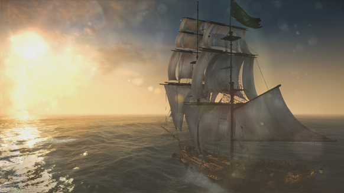
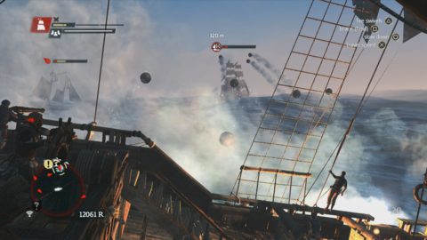
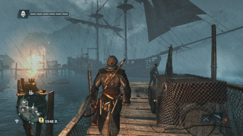
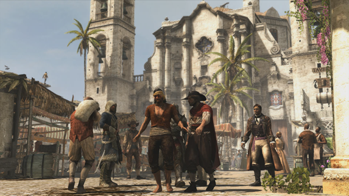
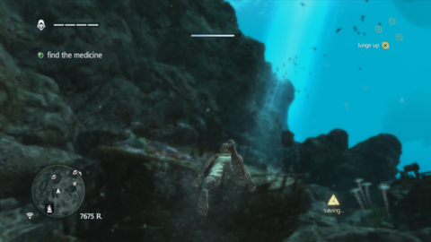

world of Black Flag is nothing short of remarkable. This is the most expansive setting in the history of the franchise, a virtual rendition of the West Indies that encompasses all manner of burgeoning colonies, Mayan ruins, and deadly jungles. Cities like Havana and Nassau reflect the series' trademark attention to detail, from the stonework cathedrals of the former to the ramshackle taverns of the latter. Then there are the remote islands inhabited by nothing more than crabs and sea turtles, underwater shipwrecks waiting to be explored, and vast stretches of sparkling Caribbean waters that are every bit as deadly as they are gorgeous.
Indeed, what makes Black Flag so special is the way it captures the thrill of sailing the open sea. It's more than the spectacle of a humpback whale leaping into the air and spraying the deck of your ship, or the sound of your crew breaking out into a sea shanty just as the sun is beginning to set across the horizon. It's the feeling that there's always something out there to be discovered, rewards waiting to be captured no matter who's standing in your way.

Simply sailing into the sunset is a delight in Assassin's Creed IV: Black Flag.
What began as a series of isolated side missions in has exploded into a full-fledged means of exploration, discovery, and combat. Early into Black Flag, Kenway takes the helm of the Jackdaw, a pirate ship that has clearly seen better days. From there, it's your charge to build the Jackdaw into a vessel capable of taking on the most powerful warships in the Caribbean. After all, that Spanish gold isn't going to plunder itself.
Taking on naval superpowers seems like a tall order early on, but pushing yourself to improve your once-rickety ship is a process that Black Flag makes incredibly rewarding. This is a game that gives you an absurd number of ways to acquire the coin and resources needed to hold your own at sea. You might run off in search of buried treasure using nothing more than a crudely drawn map, or silently infiltrate a military storehouse to collect the wood and metal needed to bolster the Jackdaw's hull. That bit of flotsam floating in the distance might be a crate of rum you can sell to make up the difference on your new mortar upgrades, or it might be a stranded sailor you can rescue to expand the size of your crew. Black Flag doesn't just present a beautiful world; it gives you a mountain of reasons to run off and go exploring.

Black Flag builds on ACIII's naval side missions to create an experience every bit as important as running around on dry land.
Upgrading your ship is critical because Black Flag places a huge emphasis on naval combat. Both the storyline and side missions are full of tense sea battles, where strategic positioning and explosive cannon fire come together in exhilarating contests of naval supremacy. It's a system that allows for a variety of tactics while never getting bogged down in overly complex controls, whether you're picking off enemies from afar with a well-placed mortar strike or dumping explosive barrels into the path of an unsuspecting foe. Whatever approach you take, managing sea battles is an absolute blast.
It's not just wanton mayhem, either. Black Flag encourages you to take pause and survey the landscape before charging into a fight. With the help of your spyglass, you can scout another ship's cargo to decide whether the resources onboard match your current needs, as well as scout out how much money you'll be able to loot. This same tool also reveals an enemy's overall combat level, letting you know if you should warm up against a few more level-8 schooners before taking on that level-20 frigate. All this reconnaissance makes naval combat that much more satisfying; success comes not only from how accurately you lob your cannons, but from how adeptly you measure the risk versus the reward.
These naval battles often lead directly into more traditional Assassin's Creed swordfighting, and it's in those seamless transitions that Black Flag fuses its two halves into one cohesive whole. Destroying a ship outright rewards you with only half its cargo, so you need to board these vessels and wear down their reluctant crews to reap the full reward. That means swinging acrobatically from one ship to another, exchanging sword strikes with enemy sailors, and watching your crew erupt in cheers once those enemies have surrendered. A similar transition occurs during the game's numerous fort takeover missions, where you bombard the defenses of a seaside fortress by ship before charging into the ensuing chaos to assassinate its officers amid a storm of fire and smoke.
Black Flag doesn't just present a beautiful world; it gives you a mountain of reasons to run off and go exploring.
That these acts of naval piracy continue to be so exciting so deep into the game's lengthy story campaign is a testament to just how excellent Black Flag's progression loop is. Raid an enemy gunboat, and you can scrap it for parts or send it on trade route missions to earn more money on the side. Overtake a fort, and you'll unlock dozens of new activities on the map, whether they're the location of great white sharks whose skin you can turn into improved armor or an underwater shipwreck you can explore once you've saved up enough for that diving bell. No matter where you go or what you do, it's virtually impossible to feel like you're not advancing in some way.
And it's a quick game to advance, too. Assassin's Creed III's crawling preamble and frequent pacing issues are nowhere to be found here, as Black Flag wastes no time throwing you into the life of a pirate. The story revolves around the aforementioned Edward Kenway, a charming troublemaker from Bristol by way of Swansea. If his name sounds familiar, it should: Edward is the grandfather of ACIII protagonist Connor Kenway. The elder Kenway's backstory is rooted in a fairly standard trope--a peasant off in search of wealth to build a better life back home--but it's his unique place in the series' overarching fiction, and the universal themes the story explores, that makes the narrative shine.

Storms have a way of catching you off guard in Black Flag.
At the game's outset, Kenway is neither assassin nor templar. He's a man whose only allegiance lies with his ship's crew, playing both factions against one another for his own gain. But as the years wear on, the luster of youthful indiscretion fades away as Kenway wrestles with a desire to find some greater purpose and a longing to do right by his estranged wife back home. It's a story that explores the human side of pirates, painting larger-than-life figures in a light that even manages to turn Blackbeard into a sympathetic character.
The narrative grows a bit unwieldy toward the end, but finds its footing just before a credit sequence that is far more touching than any story about pirates has a right to be. An eclectic cast of side characters briefly dance with but never fully tackle more powerful themes like race and gender in the age of colonialism, but such narrative flirtations are one of the few shortcomings in an otherwise terrific story. Even the modern-day chapters--brief and innocuous as they may be--manage to add a refreshing and occasionally humorous take to the Abstergo story arc.
Despite the presence of pirates and scoundrels, the world of Black Flag is a consistently gorgeous one. The Assassin's Creed series has always had a knack for establishing an engrossing sense of place in its dense urban landscapes, and Ubisoft hasn't missed a step in applying that same level of craftsmanship toward the islands and jungles of the Caribbean. Black Flag looks especially impressive on the PlayStation 4, where improved lighting and a greater resolution bathe the world in a terrific level of visual fidelity and artistic flourishes. You're better able to notice the little things, like the way foliage gives way to Kenway while he sneaks through the bushes, or the realistic flutter of fabric on your sails when a strong wind sweeps across the sea. The current-generation versions of Black Flag still look terrific, but all those little details in the PlayStation 4 version draw you into the world that much more.

Cities like Havana echo the classic environments of previous games.
Kenway's adventures on dry land don't amount to the same wholesale reinvention of the series that his time aboard the Jackdaw does, but these portions of the game have hardly been ignored. Ubisoft has borrowed a number of concepts from Far Cry 3, and they improve the on-foot experience immensely. Crafting animal hides into better equipment is a far greater incentive to hunt wild animals than it was in ACIII, while the ability to sabotage alarm bells in an enemy base adds more flexibility to the stealth experience. But once a fight breaks out into a full-on melee, Black Flag begins to feel much more like its predecessors: swordfighting is as fluid and lively as ever, but lacks any substantial refinements over previous games.
Where that sense of deja vu hits Black Flag the hardest is in its overuse of eavesdropping missions. Throughout the main story, the game asks you time and again to tail your targets (but not too closely!) and eavesdrop on their conversations (but not too obviously!) before finally letting you decide what to do with them. These types of missions--a staple of the very first game in the series--had already begun to show their age in recent Assassin's Creed installments, and time hasn't done them any favors since then.

Not all treasures are above water in Black Flag.
While less glaring, a similar lack of advancement can be found in Black Flag's multiplayer. The cat-and-mouse nature of Wanted and the co-op chaos of Wolfpack are still tremendous fun, but outside of a new story-driven tutorial mode, there aren't any substantial additions. Even though Assassin's Creed multiplayer has always occupied something of an "icing on the cake" role, it's a shame this part of the game hasn't enjoyed the same creative renewal that its single-player portion has.
But these moments of stagnation are isolated events in what is, ultimately, a massive and highly ambitious game. Black Flag presents a world full of adventure and opportunity, where treasures scavenged in a remote jungle can be used to turn the tide in a massive naval battle against mighty Spanish warships. It's a game where you can sail the seas for hours at a time, either hunting great white sharks or simply listening to your crew sing one infectious sea shanty after the next. There's an incredible scope to what you can do in Black Flag, with a level of harmony between its component parts that encourages you to try it all, and a story that keeps you invested throughout the whole thing. If there was ever any question that Assassin's Creed needed something ambitious to get the series back on track, Black Flag is that game and then some.